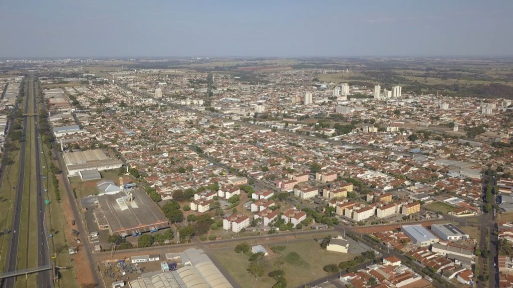
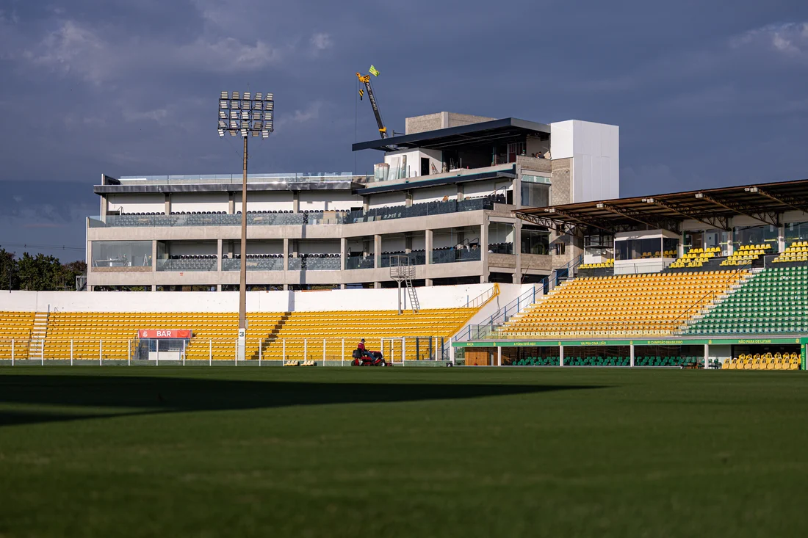

Mirassol-SP

Mirassol é um município brasileiro no interior do estado de São Paulo, Região Sudeste do país.
Está localizado no norte paulista, integrando a Região Metropolitana de São José do Rio Preto, a 453 km da cidade de São Paulo.
A cidade de Mirassol (SP) possui uma área territorial total de aproximadamente 243,2 km2.
Natureza e Lazer
Parque da Grota:
Área verde com mais de 20 hectares de mata nativa, ideal para caminhadas leves e contato direto com a natureza.
Praça Dr. Anísio José Moreira:
O coração da cidade, ótimo ponto de encontro e circulação no centro.
Cultura e História
Museu Municipal Jezualdo D'Oliveira:
Fundado em 1945, é um dos museus históricos mais antigos do interior paulista.
Igreja Matriz de São Pedro Apóstolo:
Tradicional templo religioso localizado na praça principal.
Esporte
Estádio Municipal José Maria de Campos Maia (Maião):

Casa oficial do Mirassol Futebol Clube, ponto de referência para os fãs de futebol.